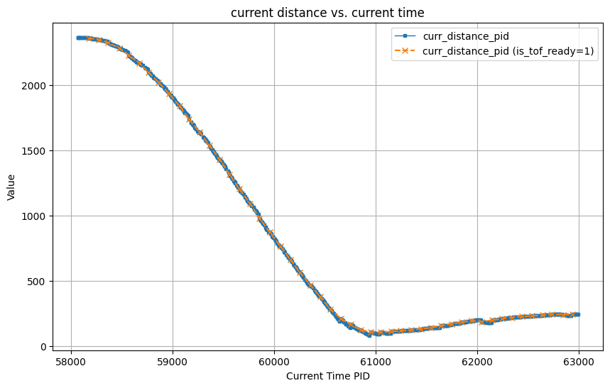
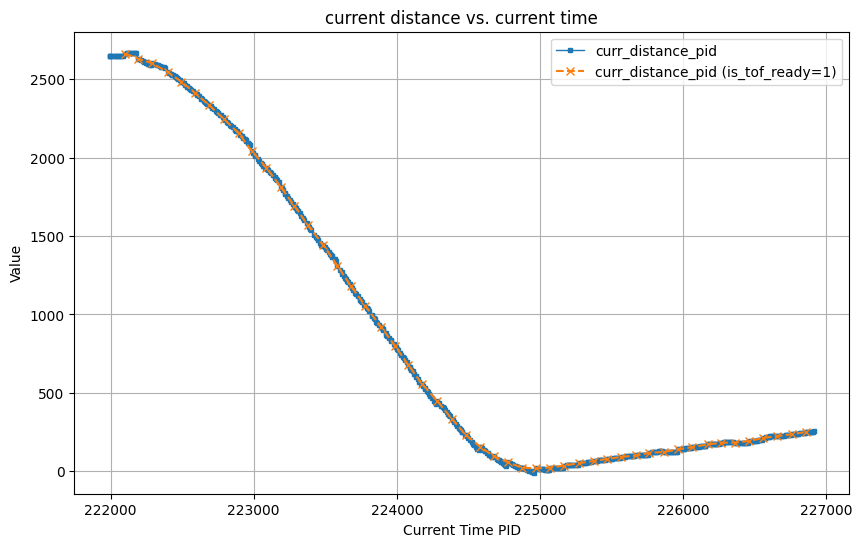
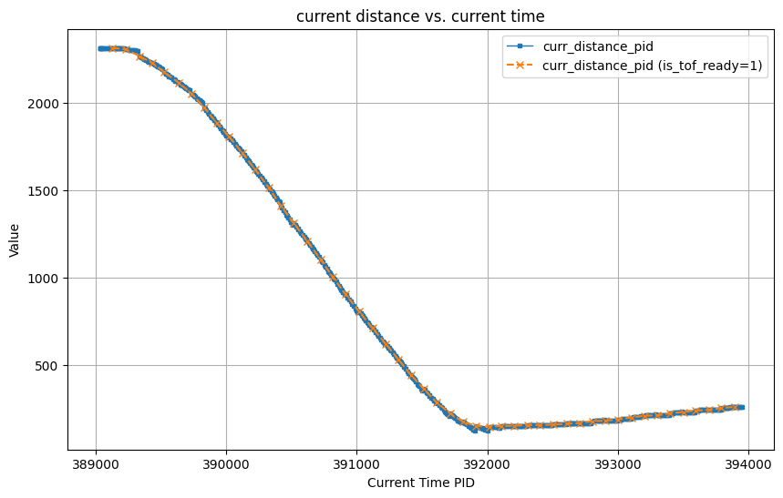

Prelab
Sending and Receiving Data over BLE
I built the send and receive data mechanism using code from a previous lab. I added command 'SET_PID' to set new PID coefficients and robot running time and command 'MOVE_TOWARD_WALL' to control it move toward the wall. I created a new array to store the PID values (error, integral, derivative), tof values (current distance measured, time of current distance measured, previous distance measured, time of previous distance measured), and intermediate value (interpolated distance, filtered derivative value). All of these value are stored in a struct, and then stored in a struct array.
In the python script, I just send the command and store the strings sent from Artemis for future analysis.
Lab tasks
P/I/D discussion
In this lab, I used the long distance mode of the tof (4m measurement distance). According to the last lab measurement, the effective operating range of my motor is 7500-65535 (16bit analogread resolution) when the car is moving on the lab floor. And since the output distance unit of TOF is mm, the frequency is about 85-100ms at a time, I think the coefficient of P,I,D should be 0.01 and below.
A value of less than 0.01 prevents P*error from calculating a huge value, or a large derivative value due to a large error rate of change between two updates of the tof. This also reduces the effect of the millimeter-integral cumulative error (although I later used integral isolation). If the values of these three controllers are too large, it can lead to a crash.
To increase the frequency of tof updates, although I didn't use setProxIntegrationTime in tof_pololu's library, I lowered the timing budget using setTimingBudgetInMs(50). According to the tof lab, If this value is lowered, there will be a slight decrease in accuracy, but it is acceptable because it improves the number of times the error is corrected by the TOF value.
The reason I chose to use a combination of P, I, and D controllers is because the P controller can influence the pwm output based on the current error; integral-isolated I controller prevents the car from stopping at a position that is some distance away from the target point, because the integral controller can accumulate value over time, which increases the PID output and thus the pwm value, causing the motor to start spinning again; D controller can dampen rapid changes in error and reduce overshoot when the car is a fast moving system.
Implementation
In the code, I used curr_distance_pid and curr_time_pid to record the current distance from the wall and the time of measurement. I used previous_error_pid and last_time_pid to record the value and time of the last calculated error. I used prev_distance_pid, prev_time_pid to record the distance and measurement time of the last time. In the section of the main loop of moving toward wall, I discussed two scenarios: 1. the tof returned a reading, and 2. the tof did not return a reading. In the first case, the current and previous distance and time are updated directly and the slope between this and the previous TOF return value is computed to allow for the operation of interpolation in the absence of TOF return data. In the second case, I calculate dthe interpolated distance and use this to update the current and previous distance and time.
After that, I calculated the p, i, and d value needed for the pid, and record the values into an array for subsequent sending to the computer via BLE. I chose to use integral isolation for the integral value to prevent it from accumulating errors at the beginning of the run, which would result in excessive speed and hitting the wall. I chose to filter the derivative value using a low pass filter to get a smooth value. I chose to use linear interpolation to calculate the predicted distance when the tof is not ready, so as to avoid losing control of the robot.
Result
In the following demo, the coefficients of PID is P:0.03,I:0.001,and D:0.05.
In the video below, I demonstrate how my PID controller behaves when placing the robot 8 grids (2.4meter) from the wall. As the video shows, the car stops before hitting the wall and slowly backs up to setpoint. In the plot, I plotted the current distance from the wall against the current time. In this plot, the blue dots indicate all current distances and the orange "x" indicates the distance measured by the tof. I also plotted the current motor input versus the current time. Since I processed the motor input so that it is only positive. If the car needs to be rotated backwards, an int will be passed to the control_motor function so that it rotates backwards with the motor input shown in the graph.
In the video below, I demonstrate how my PID controller behaves when placing the robot 9 grids (2.7meter) from the wall. As the video shows, the car stops before hitting the wall and slowly backs up to setpoint.
In the video below, I demonstrate how my PID controller behaves when placing the robot 7.5 grids (2.3meter) from the wall. As the video shows, the car stops before hitting the wall and slowly backs up to setpoint.

In the video below, I demonstrate how my PID controller behaves when placing the robot 3.5 grids (1meter) from the wall. As the video shows, the car stops at the setpoint and shakes for a while .


As you can see from the above demo, my PID controller works fine at different distances without making the car hit the wall.
Wind-up implementation and discussion
I applied the prevent wind-up mechanism in the design of the PID controller, including integral term timing and integral isolation, as shown in the following code.
If the mechanism of prevent wind-up is not applied, it can be expected that if the distance of the car from the wall is constant, the rotational speed of the motor will be faster and faster until the motor input pwm exceeds the upper limit of the motor. Even if the distance of the car from the wall is getting smaller, since there is no limit on the accumulated value of the integral term, it is easy for the car to hitting the wall.